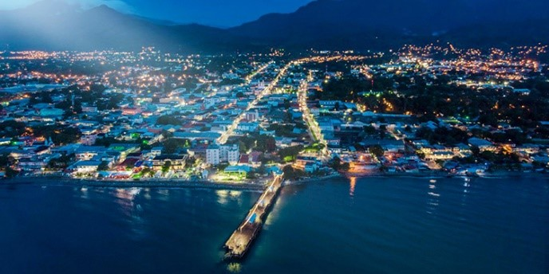

Bienvenidos a La Ceiba
 La Ceiba es una ciudad puerto del Caribe en el norte de Honduras. Es una vía de acceso a las Islas de la Bahía Roatán, Útila y Guanaja, que forman parte de una vasta barrera de arrecifes y tienen sitios de buceo con abundante fauna marina, como los tiburones ballena.
La Ceiba es una ciudad puerto del Caribe en el norte de Honduras. Es una vía de acceso a las Islas de la Bahía Roatán, Útila y Guanaja, que forman parte de una vasta barrera de arrecifes y tienen sitios de buceo con abundante fauna marina, como los tiburones ballena.

Al sur de La Ceiba está el Parque Nacional Pico Bonito, con abundante vida silvestre, incluidos jaguares y tucanes.
En 1872 Manuel Hernández construyó una pequeña choza debajo del árbol de Ceiba que crecía cerca de los viejos muelles. Con el tiempo, cada vez más personas de la actual Honduras (especialmente los departamentos de Olancho y Santa Bárbara ) y de todo el mundo se asentaron en La Ceiba. Los trabajadores se sintieron atraídos por trabajos asociados con la industria bananera, que se volvió importante para la economía regional.
La Ceiba fue declarada municipio el 23 de agosto de 1877. En ese momento, Marco Aurelio Soto era presidente de Honduras. La Ceiba fue el centro del negocio del banano y la piña , la base de su economía.